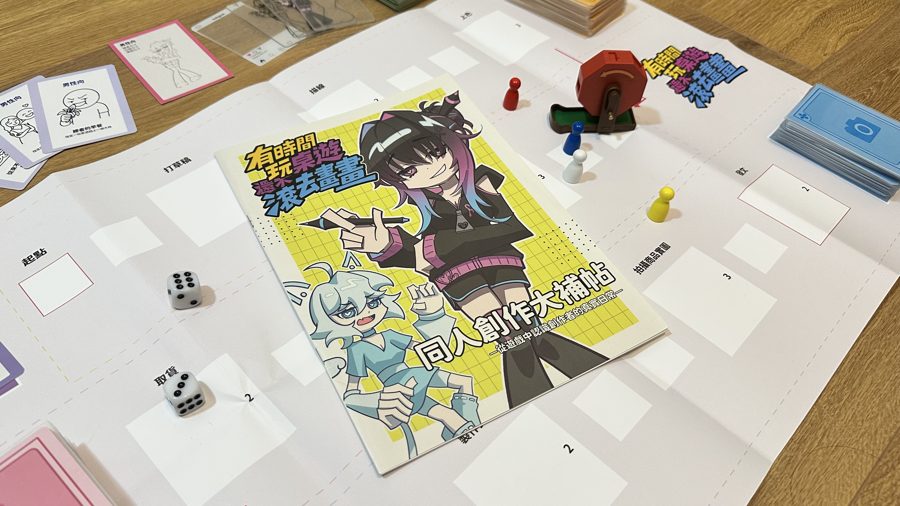
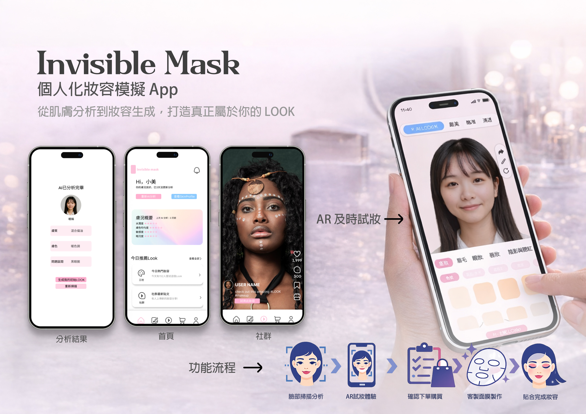
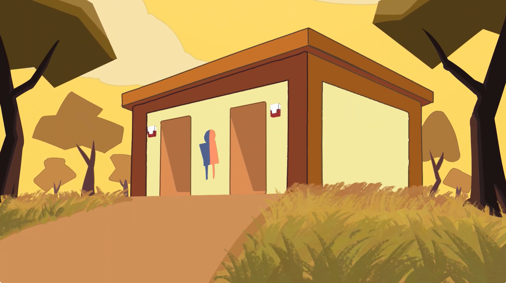
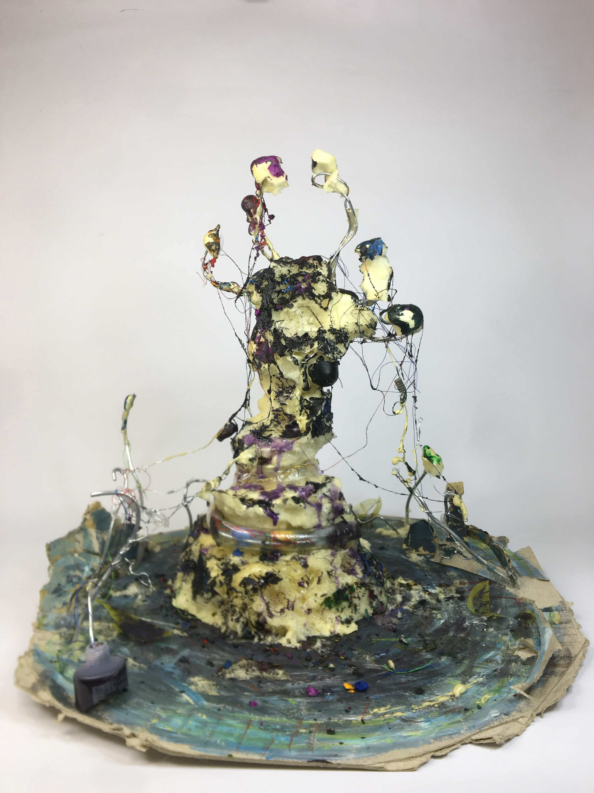
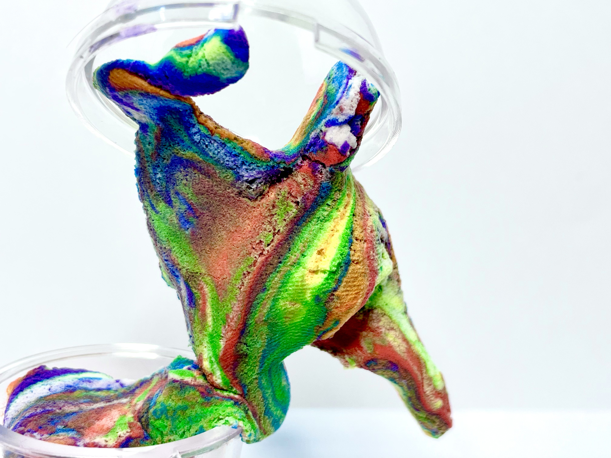
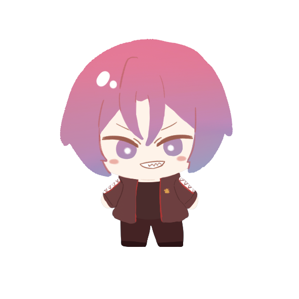
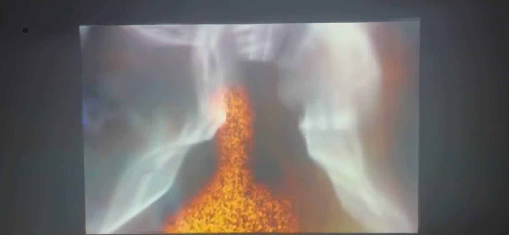
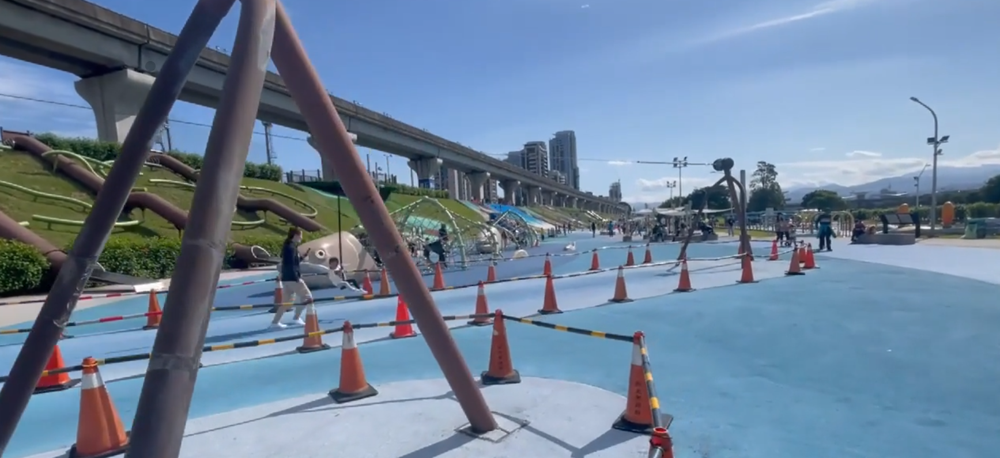
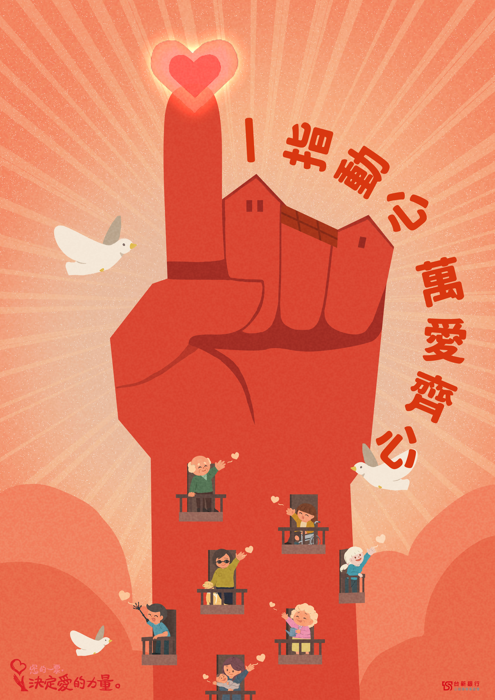
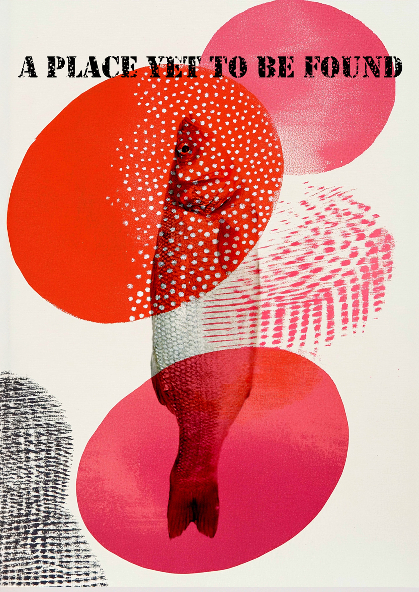

Works
A selection of visual design, interactive design, animation, photography, and experimental work. Each project records a different way of turning a concept into an image, system, or experience.
 01 / Poster Design
01 / Poster DesignOcean of Masks
Poster Design / International Award
 02 / Poster Design
02 / Poster DesignChildren's Kites
Poster Design / International Selected
 03 / Brand Identity
03 / Brand IdentityTemporary Stay
Brand Identity / Graphic Design
 04 / Co-creation
04 / Co-creationDian Dian Shan Co-creation Project
Co-creation / Graphic Design

05 / Board GameDoujin Booth Teaching Board Game
Board Game / Cards / Booklet

06 / UIUXInvisible Mask
UIUX / Prototype
 07 / Game Design
07 / Game DesignCryptography Escape Room Game
Game Design / Educational Project

08 / AnimationToilet Launch
Animation / Team Project

09 / Mixed MediaStruggle
Mixed Media Works

10 / Mixed MediaMilkshake Hero
Mixed Media Works
 11 / Photography
11 / PhotographyTraces Left Behind
Photography / Daily Observation
 12 / 3D
12 / 3D3D & Motion Practice
Experiments / Template-based Web / Practice
 13 / Poster Design
13 / Poster DesignBlood Is Not a Sin
Poster Design

14 / Motion PracticeAnimation Study
Short Loop Animation / Motion Practice

15 / InstallationTrace of Being
Interactive Installation

16 / VideoErchong Floodway
Video Study
 17 / Projection
17 / ProjectionLahu Totem Projection
Projection Mapping

18 / Poster DesignOne Finger, One Heartbeat
Poster Design

19 / Poster DesignVisual Design Studies
Poster Design
 20 / Identity
20 / IdentityVisual Identity
Identity System